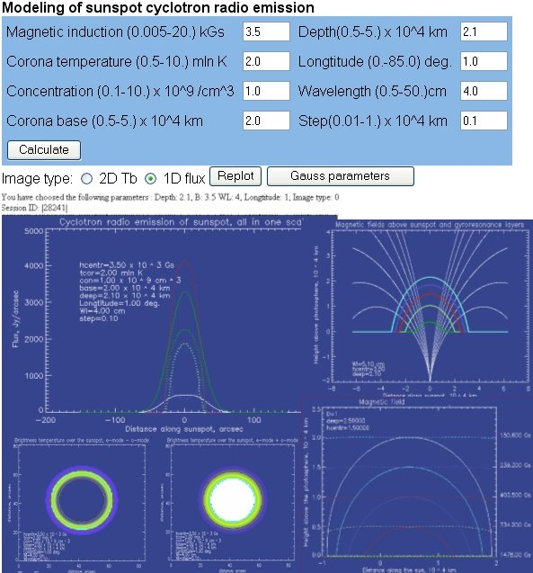

Вычисления
Эфемериды, диаграмма направленности и моделирование
Программы подготовки наблюдений и интерпретации данных РАТАН-600. Сами веб-приложения пока работают на старом сайте — ссылки ведут туда.
Эфемериды Солнца · EFRAT-2
Расчёт эфемерид — обязательный шаг подготовки наблюдений: по ним устанавливают Южный сектор и Плоский отражатель и составляют задание для системы регистрации. Программу EFRAT-2 разработал сектор эфемеридного обеспечения ГАО РАН (В. Н. Львов); версия 2009 г. собрана под Linux и запускается из командной строки или с чтением входных данных из файла.
Для Солнца на заданную дату программа выдаёт для каждого азимута облучателя момент прохождения, азимут и высоту, координаты (RA, Dec), звёздное время, рефракцию, позиционные углы, скорости, угловой радиус и гелиографические параметры (L0, B0, P). Пример запуска на три азимута (+30°, 0°, −30°):
efratp 20090815 1 30 0 -30
Скрипт ef1.pl превращает результат в файл установки отражателей (.csi) и задание mainobs.txt для планировщика наблюдений.
Одномерная диаграмма направленности
Расчёт одномерной диаграммы направленности РАТАН-600 выполняется методом А. Н. Коржавина по программе bp1 (автор О. В. Верходанов). Константы телескопа, облучателя и приёмников хранятся в базе ratan.const, которую ведёт программа rat:
| Раздел | Что задаётся | Примеры значений по умолчанию |
|---|---|---|
rtp — телескоп | широта; радиус первичной окружности и глубина для Северного сектора и для Юга с Плоским; размер отверстия в Плоском; высота элементов | φ = 43,831°; R = 288 520 мм; h = 7400 мм |
fdr — облучатель | фокусное расстояние, полуразмеры, положение конуса, наклон первичного зеркала, размеры препятствия (каретки) | f = 2150 мм; 4100 × 2750 мм; 50° |
rmw — приёмники | параметры приёмной аппаратуры по каналам | — |
Оценку ширины без расчёта даёт формула θгор(″) ≈ 0,85·λ(мм) (см. Инструмент).
Моделирование радиоизлучения
Моделирование магнитосфер активных областей и спокойного Солнца дополняет интерпретацию наблюдений: строение и механизмы излучения, тепловое магнитотормозное излучение пятен и корональных петель, причины смены знака поляризации, вклад нетепловых механизмов. Подбор параметров модели под наблюдаемый скан позволяет оценить магнитное поле, плотность и температуру источника. Программы — многолетняя разработка А. Н. Коржавина и Т. И. Кальтман (СПбФ САО РАН).
В программах предусмотрено также моделирование яркого источника хромосферной сетки, петельной структуры с нетепловыми механизмами и модельного источника кубической формы.

Результаты исследований
Горячая корональная петля и инверсия поляризации
Расчёты теплового циклотронного излучения простейшей трёхмерной горячей петли (тора) показали, что такая петля заметно меняет излучение активной области на сантиметровых и дециметровых волнах: спектр может получить несколько максимумов или узкополосные циклотронные линии, а знак поляризации — неоднократно меняться по диапазону. Ожидаемое распределение поляризации близко к наблюдавшемуся на РАТАН-600 в области AR 7962 12–14 мая 1996 г.
Вспышечно-продуктивные области по данным РАТАН-600 и ССРТ
Сложные спектрально-поляризационные свойства вспышечно-продуктивных областей по РАТАН-600 — рост поляризованного потока на коротких сантиметровых волнах (1,8–5 см) и многократные инверсии поляризации по частоте — дополняются частыми сменами знака поляризации во времени на волне 5,2 см по данным ССРТ. Это указывает на непрерывные процессы накопления и разогрева перед вспышкой.
Литература
- Коржавин А. Н., Львов В. Н., Тохчукова С. Х., Цекмейстер С. Д. Развитие эфемеридной поддержки наблюдений удалённых радиоисточников и объектов Солнечной системы на радиотелескопе РАТАН-600. Астрофиз. бюлл., 67, № 2, 237 (2012).
- Тохчукова С. Х., Коржавин А. Н., Богод В. М., Курочкин Е. А., Шендрик А. В. Расчёт горизонтального размера диаграммы направленности РАТАН-600 в режиме «Южный сектор с Плоским отражателем». Астрофиз. бюлл., 69, № 3, 377 (2014).
- Zlotnik E. Ya., Kaltman T. I., Sheiner O. A. Thermal cyclotron radiation from hot coronal loops and peculiarities of the polarization structure of solar microwave emission sources. I, II. Astronomy Letters, 33, 168–181; 327–339 (2007).
- Kal'tman T. I., Korzhavin A. N., Tsap Yu. T. Sign reversals of the polarization of the microwave emission of sunspot radio sources. Astronomy Reports, 49, 747–754 (2005).
- Bogod V. M., Yasnov L. V. Polarization of microwave radio emission of flare-producing solar active regions. Solar Physics, 255, 253–271 (2009).